Colores y paletas de colores en R
Todo sobre la creación, personalización, modificación y uso de colores y paletas en R
7/7/2026
El uso del color es clave para comunicar, y el ecosistema de R tiene varios trucos convenientes para ayudarnos a usar el color de mejores formas.
En R, los colores se escriben como código, y a grandes rasgos pueden ser colores con nombre (por ejemplo, "purple"), colores hexadecimales (escritos como códigos de al menos 6 dígitos, como #FFFFFF), o como parte de funciones que producen paletas de colores.
Usar colores
La forma más básica de elegir un color en R es por su nombre. Por defecto, en R existen 657 colores con nombre.
Aquí puedes ver una lista de los principales colores de R y copiar sus nombres para usarlos:
white
aliceblue
antiquewhite
antiquewhite1
antiquewhite2
antiquewhite3
antiquewhite4
aquamarine
aquamarine2
aquamarine3
aquamarine4
azure
azure2
azure3
azure4
beige
bisque
bisque2
bisque3
bisque4
black
blanchedalmond
blue
blue2
blue3
blue4
blueviolet
brown
brown1
brown2
brown3
brown4
burlywood
burlywood1
burlywood2
burlywood3
burlywood4
cadetblue
cadetblue1
cadetblue2
cadetblue3
cadetblue4
chartreuse
chartreuse2
chartreuse3
chartreuse4
chocolate
chocolate1
chocolate2
chocolate3
chocolate4
coral
coral1
coral2
coral3
coral4
cornflowerblue
cornsilk
cornsilk2
cornsilk3
cornsilk4
cyan
cyan2
cyan3
cyan4
darkgoldenrod
darkgoldenrod1
darkgoldenrod2
darkgoldenrod3
darkgoldenrod4
darkgreen
darkkhaki
darkmagenta
darkolivegreen
darkolivegreen1
darkolivegreen2
darkolivegreen3
darkolivegreen4
darkorange
darkorange1
darkorange2
darkorange3
darkorange4
darkorchid
darkorchid1
darkorchid2
darkorchid3
darkorchid4
darkred
darksalmon
darkseagreen
darkseagreen1
darkseagreen2
darkseagreen3
darkseagreen4
darkslateblue
darkturquoise
darkviolet
deeppink
deeppink2
deeppink3
deeppink4
deepskyblue
deepskyblue2
deepskyblue3
deepskyblue4
dodgerblue
dodgerblue2
dodgerblue3
dodgerblue4
firebrick
firebrick1
firebrick2
firebrick3
firebrick4
floralwhite
forestgreen
gainsboro
ghostwhite
gold
gold2
gold3
gold4
goldenrod
goldenrod1
goldenrod2
goldenrod3
goldenrod4
green
green2
green3
green4
greenyellow
honeydew
honeydew2
honeydew3
honeydew4
hotpink
hotpink1
hotpink2
hotpink3
hotpink4
indianred
indianred1
indianred2
indianred3
indianred4
ivory
ivory2
ivory3
ivory4
khaki
khaki1
khaki2
khaki3
khaki4
lavender
lavenderblush
lavenderblush2
lavenderblush3
lavenderblush4
lawngreen
lemonchiffon
lemonchiffon2
lemonchiffon3
lemonchiffon4
lightblue
lightblue1
lightblue2
lightblue3
lightblue4
lightcoral
lightcyan
lightcyan2
lightcyan3
lightcyan4
lightgoldenrod
lightgoldenrod1
lightgoldenrod2
lightgoldenrod3
lightgoldenrod4
lightgoldenrodyellow
lightgreen
lightpink
lightpink1
lightpink2
lightpink3
lightpink4
lightsalmon
lightsalmon2
lightsalmon3
lightsalmon4
lightseagreen
lightskyblue
lightskyblue1
lightskyblue2
lightskyblue3
lightskyblue4
lightslateblue
lightsteelblue
lightsteelblue1
lightsteelblue2
lightsteelblue3
lightsteelblue4
lightyellow
lightyellow2
lightyellow3
lightyellow4
limegreen
linen
magenta
magenta2
magenta3
maroon
maroon1
maroon2
maroon3
maroon4
mediumorchid
mediumorchid1
mediumorchid2
mediumorchid3
mediumorchid4
mediumpurple
mediumpurple1
mediumpurple2
mediumpurple3
mediumpurple4
mediumseagreen
mediumslateblue
mediumspringgreen
mediumturquoise
mediumvioletred
midnightblue
mintcream
mistyrose
mistyrose2
mistyrose3
mistyrose4
moccasin
navajowhite
navajowhite2
navajowhite3
navajowhite4
navy
oldlace
olivedrab
olivedrab1
olivedrab2
olivedrab3
olivedrab4
orange
orange2
orange3
orange4
orangered
orangered2
orangered3
orangered4
orchid
orchid1
orchid2
orchid3
orchid4
palegoldenrod
palegreen
palegreen1
palegreen3
palegreen4
paleturquoise
paleturquoise1
paleturquoise2
paleturquoise3
paleturquoise4
palevioletred
palevioletred1
palevioletred2
palevioletred3
palevioletred4
papayawhip
peachpuff
peachpuff2
peachpuff3
peachpuff4
peru
pink
pink1
pink2
pink3
pink4
plum
plum1
plum2
plum3
plum4
powderblue
purple
purple1
purple2
purple3
purple4
red
red2
red3
rosybrown
rosybrown1
rosybrown2
rosybrown3
rosybrown4
royalblue
royalblue1
royalblue2
royalblue3
royalblue4
salmon
salmon1
salmon2
salmon3
salmon4
sandybrown
seagreen
seagreen1
seagreen2
seagreen3
seashell
seashell2
seashell3
seashell4
sienna
sienna1
sienna2
sienna3
sienna4
skyblue
skyblue1
skyblue2
skyblue3
skyblue4
slateblue
slateblue1
slateblue2
slateblue3
slateblue4
snow
snow2
snow3
snow4
springgreen
springgreen2
springgreen3
springgreen4
steelblue
steelblue1
steelblue2
steelblue3
steelblue4
tan
tan1
tan2
tan4
thistle
thistle1
thistle2
thistle3
thistle4
tomato
tomato2
tomato3
tomato4
turquoise
turquoise1
turquoise2
turquoise3
turquoise4
violet
violetred
violetred1
violetred2
violetred3
violetred4
wheat
wheat1
wheat2
wheat3
wheat4
yellow
yellow2
yellow3
yellow4
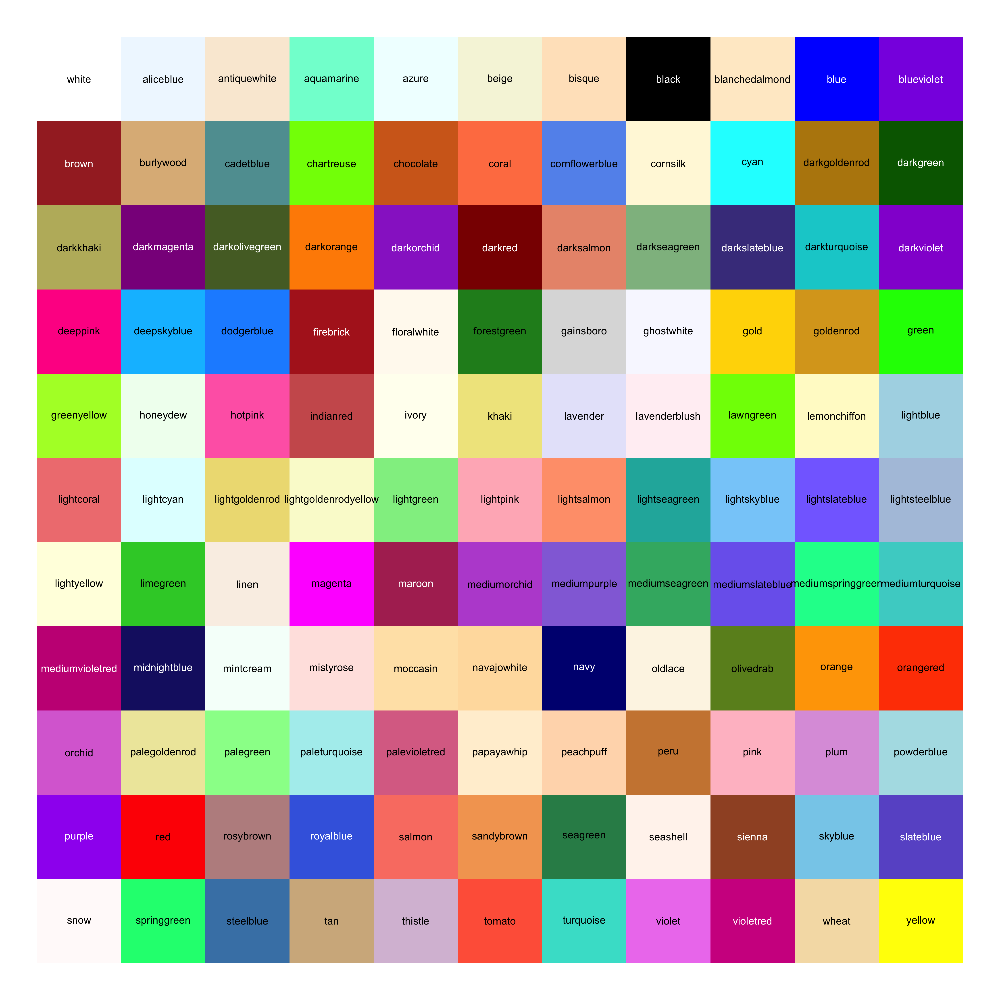
Ver un gráfico con todos los colores de R
Para usarlos, simplemente usa su nombre:
colores <- c("indianred", "steelblue", "grey60")
Casi todos estos colores pueden ser modificados agregando un número del 1 al 4 al final del nombre; por ejemplo, mediumorchid puede hacerse levemente más claro o más oscuro:
escala <- c("mediumorchid", "mediumorchid1", "mediumorchid2", "mediumorchid3", "mediumorchid4")
Los grises (gray) tienen la particularidad de que puedes ponerles un número entre 1 y 99 para ajustar su brillo:
escala <- c("gray2", "gray10", "gray30", "gray50", "gray70", "gray90")
Si tienes colores hexadecimales, que puedes encontrar en internet en muchas páginas, como coolors.co, recuerda ponerlos entre comillas y anteponer el signo gato:
colores <- c("#DEC5F2", "#9069C0", "#6E3A98")
Paletas de colores
Varios paquetes de R contienen sus propias paletas de colores prediseñadas. Veremos algunas.
Uno de los conjuntos de paletas principales en visualización de datos, sobre todo para mapas, son las de
Color Brewer, a las que puedes acceder con el paquete {RColorBrewer}.
Éstas son algunas de las paletas de Color Brewer:
library(RColorBrewer)
colores <- brewer.pal(name = "PuRd", n = 5)
colores <- brewer.pal(name = "BuPu", n = 5)
colores <- brewer.pal(name = "Purples", n = 5)
colores <- brewer.pal(name = "Blues", n = 5)
colores <- brewer.pal(name = "Set2", n = 5)
colores <- brewer.pal(name = "Pastel1", n = 5)
colores <- brewer.pal(name = "PRGn", n = 5)
colores <- brewer.pal(name = "RdYlBu", n = 5)
Puedes verlas todas ejecutando RColorBrewer::display.brewer.all()!
Ver todas las paletas de Color Brewer
RColorBrewer::display.brewer.all()
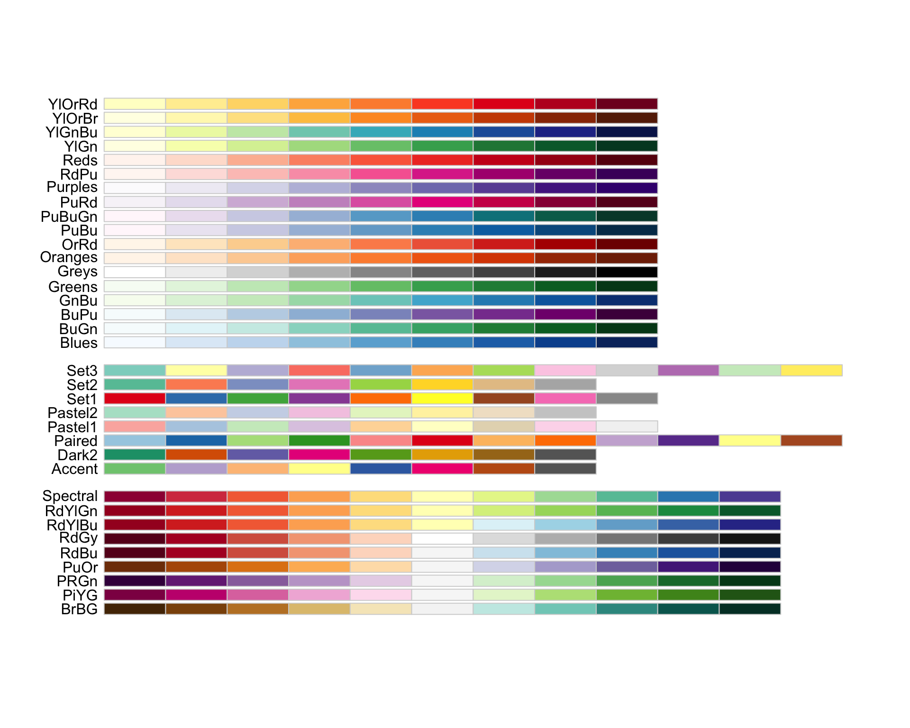
Cuando elijas una de las paletas, puedes usarla
en cualquier gráfico de {ggplot2} con la función scale_color_brewer() o scale_fill_brewer(), según corresponda a la variable que quieres pintar, y elije la paleta por medio de su nombre:
library(ggplot2)
iris |>
ggplot() +
aes(x = Sepal.Length, y = Sepal.Width, color = Species) +
geom_point(size = 3, alpha = 0.8) +
# usar la paleta "PuRd"
scale_color_brewer(palette = "Set2")
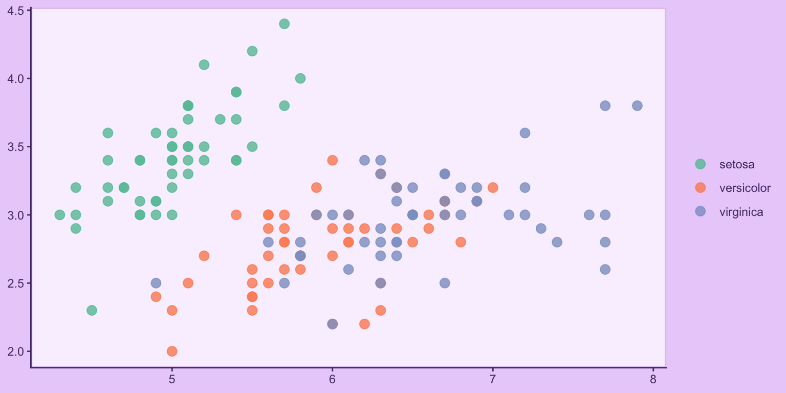
Con el paquete {colorspace} también podemos ver otras paletas disponibles:
library(colorspace)
Aquí van algunas de ellas:
colores <- colorspace::sequential_hcl(5, palette = "Red-Blue")
colores <- colorspace::sequential_hcl(5, palette = "Purple-Orange")
colores <- colorspace::sequential_hcl(5, palette = "Heat 2")
colores <- colorspace::sequential_hcl(5, palette = "BurgYl")
colores <- colorspace::sequential_hcl(5, palette = "Mint")
colores <- colorspace::sequential_hcl(5, palette = "PinkYl")
colores <- colorspace::sequential_hcl(5, palette = "Sunset")
Puedes ver todas las paletas de colores de {colorspace} ejecutando colorspace::hcl_palettes(plot = TRUE).
Ver todas las paletas de colores de {colorspace}
colorspace::hcl_palettes(plot = TRUE)
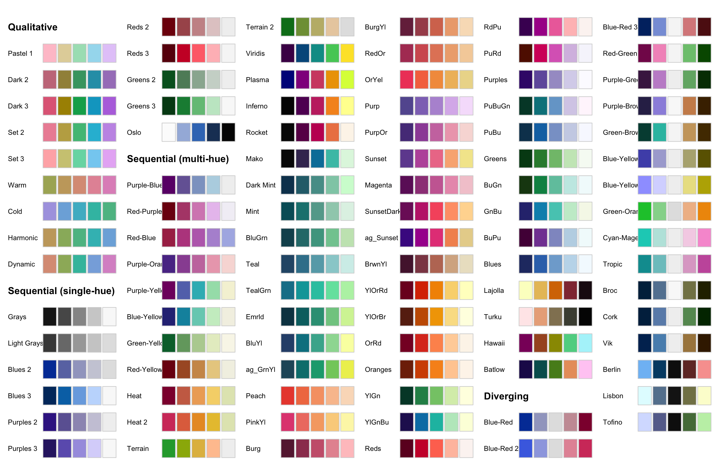
Usar estas paletas en {ggplot2} es tan fácil como agregar la función de escala apropiada para definir los colores del gráfico:
iris |>
ggplot() +
aes(Petal.Width, Sepal.Width, color = Sepal.Length) +
geom_point(size = 3, alpha = 0.7) +
# usar la paleta "Sunset" para una variable continua
colorspace::scale_color_continuous_sequential(palette = "Sunset") +
scale_y_continuous(expand = expansion(c(0, 0.1)))
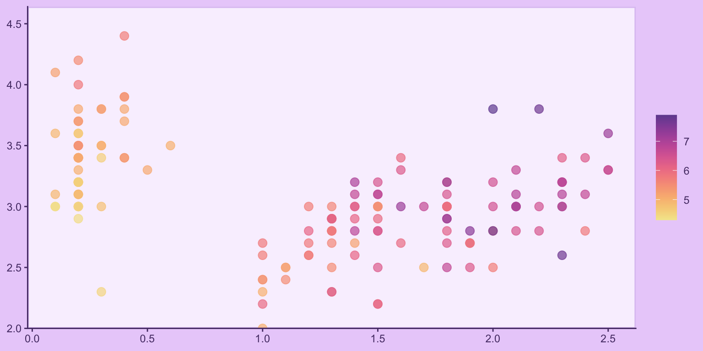
Encuentra una lista que compila todas las paletas de colores de la comunidad de R en este repositorio.
Usar paletas de colores en gráficos
Gráficos con colores manuales
La forma más simple de usar colores en gráficos de {ggplot2} es definiéndolos en la escala de color apropiada.
Publicaciones relacionadas

Para una variable discreta o categórica, los colores se aplican en la capa scale_color_manual() y se aplican en el orden de la variable:
library(ggplot2)
iris |>
ggplot() +
aes(Sepal.Width, Sepal.Length,
color = Species) +
geom_point(size = 2, alpha = .8) +
scale_color_manual(
values = c("#cc3b7b", "#705ce6", "#668cf6")
)
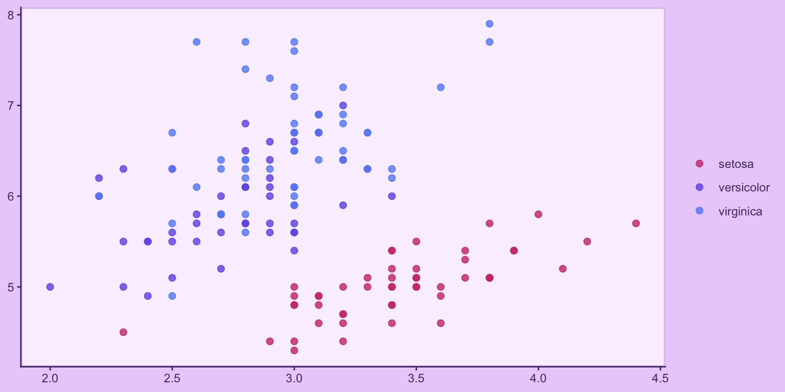
O bien, se puede aplicar cada color a cada valor específico de la variable:
iris |>
ggplot() +
aes(Sepal.Width, Sepal.Length,
color = Species) +
geom_point(size = 2, alpha = .8) +
# especificar un color para cada valor de la variable
scale_color_manual(
values = c("versicolor" = "#cc3b7b",
"virginica" = "#705ce6",
"setosa" = "#668cf6")
)
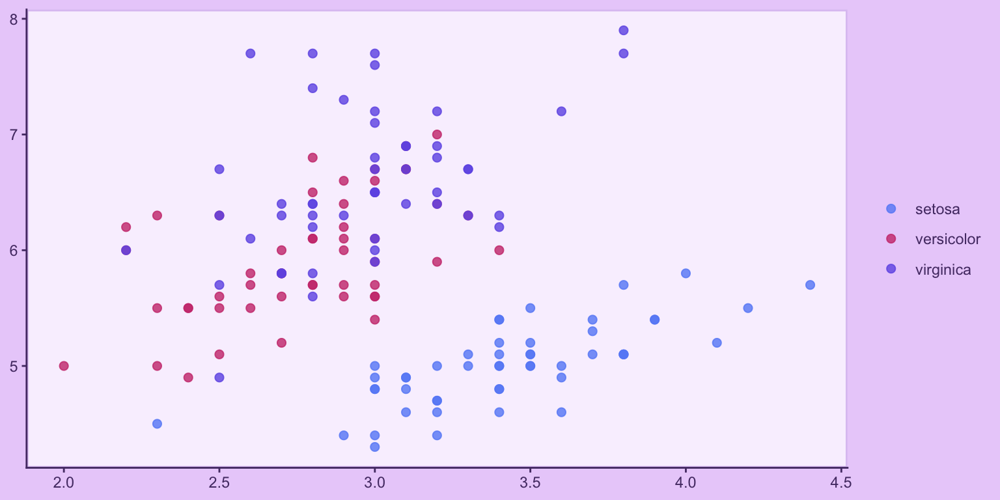
Paletas de colores predefinidos
Muchos paquetes de R incorporan funciones de escalas de colores (scale_color_x(), scale_fill_x()) para aplicar una paleta de color fácilmente a un gráfico creado {ggplot2}.
Por ejemplo, las paletas de {colorspace} que vimos más arriba:
library(ggplot2)
# escalas para variables discretas
iris |>
ggplot() +
aes(Petal.Width, fill = Species) +
geom_bar() +
colorspace::scale_fill_discrete_qualitative(palette = "Dark 3") +
scale_y_continuous(expand = expansion(c(0, 0.1)))
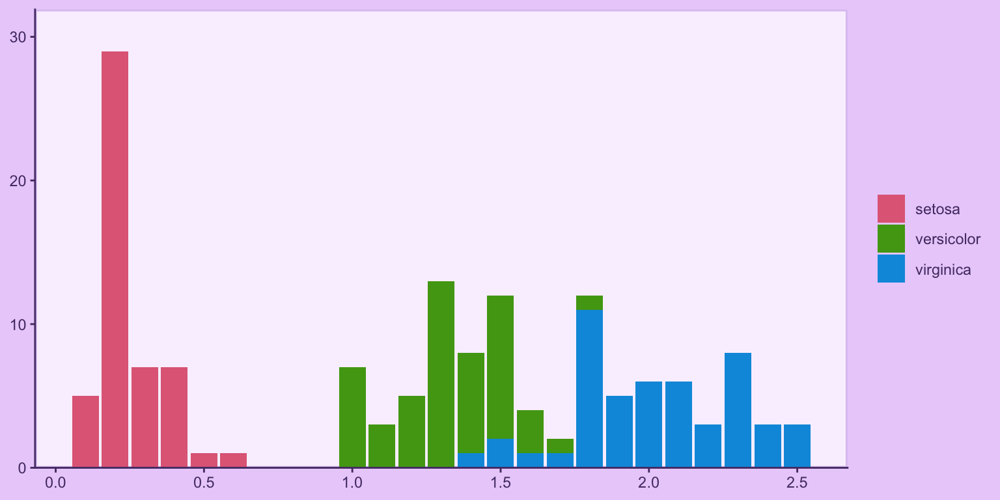
# escalas para variables continuas
iris |>
ggplot() +
aes(Sepal.Width, Sepal.Length, color = Petal.Width, size = Petal.Length) +
geom_point(alpha = .8) +
colorspace::scale_color_continuous_sequential(palette = "Sunset", na.value = "white") +
scale_size_continuous(range = c(1, 3)) +
guides(color = guide_colorsteps())
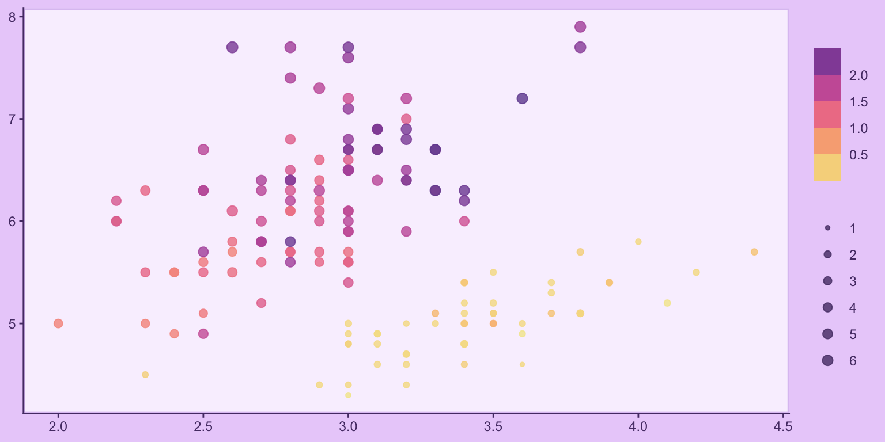
# escalas para variables continuas
iris |>
ggplot() +
aes(Petal.Length, Sepal.Width, color = Petal.Width, size = Sepal.Length) +
geom_point(alpha = .8) +
viridis::scale_colour_viridis("viridis", na.value = "white") +
scale_size_continuous(range = c(1, 3)) +
guides(color = guide_colorsteps())
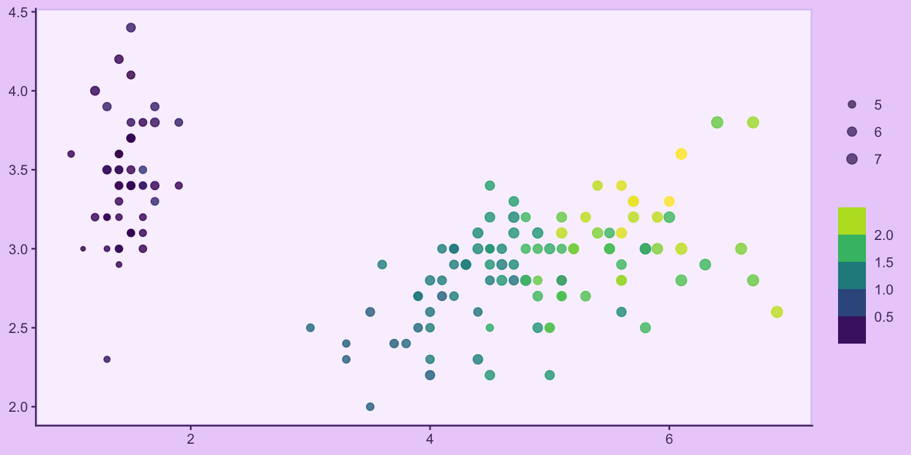
O bien, las paletas de {RColorBrewer} que vimos antes:
library(ggplot2)
iris |>
ggplot() +
aes(x = Sepal.Length, y = Sepal.Width, color = Species) +
geom_point(size = 3, alpha = 0.9) +
# usar la paleta "Set2" de Color Brewer
scale_color_brewer(palette = "Accent")
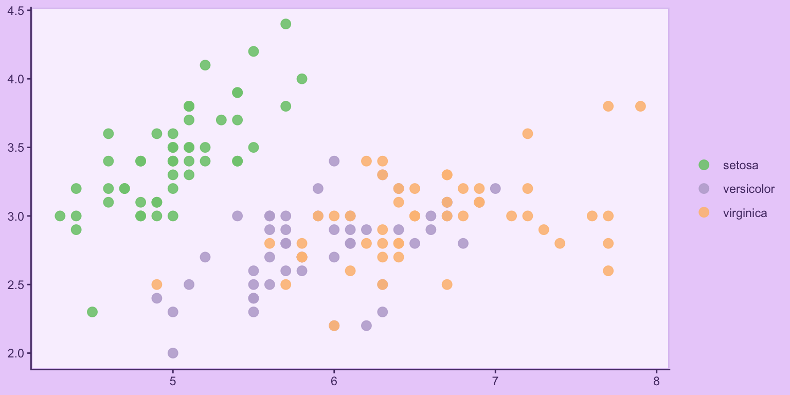
Algunas de las funciones para aplicar paletas de colores tienen funcionalidades extras. Por ejemplo, las funciones de {colorspace} permiten modificar sus paletas en términos de la saturación (chroma) y el brillo del color (luminance), entregándote más libertad al momento de definir una apariencia específica:
grafico <- iris |>
ggplot() +
geom_point(aes(Sepal.Width, Sepal.Length, color = Petal.Width), size = 3, alpha = .8) +
guides(color = guide_colorsteps())
grafico +
colorspace::scale_color_continuous_sequential(
palette = "TealGrn",
c1 = 50, # intensidad del color
l1 = 40) # brillo del color
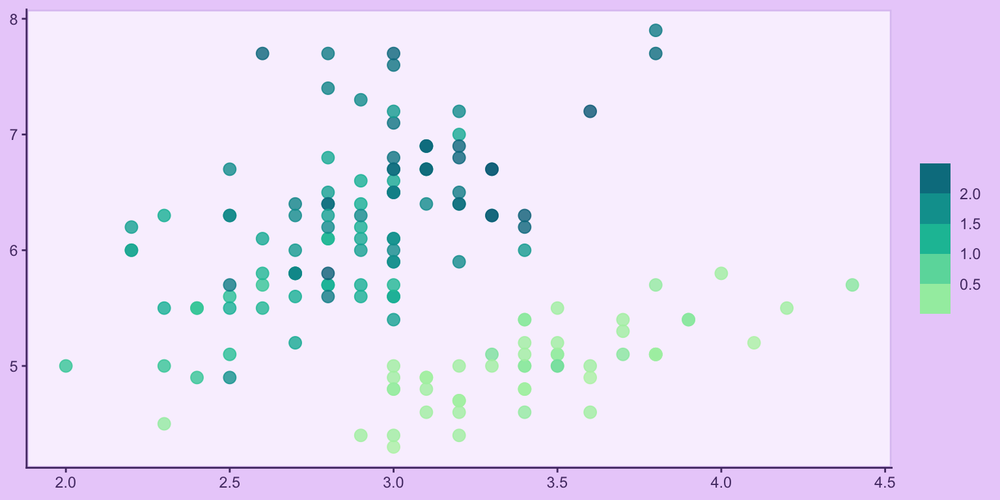
grafico +
colorspace::scale_color_continuous_sequential(
palette = "TealGrn",
c1 = 10, # intensidad del color
l1 = 30) # brillo del color
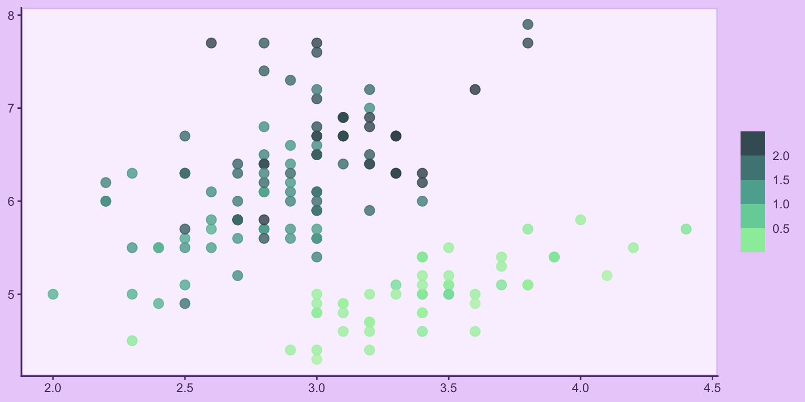
Crear paletas de colores
También podemos usar funciones de R para crear paletas de colores personalizadas a partir de uno o varios colores, o especificando los rangos de variación de los colores.
Crear paletas secuenciales
Las paletas secuenciales consiste en un degradado entre dos o más colores. Suelen usarse para representar una variable continua o numérica, cuyo valor va cambiando de forma cuantitativa.
La función sequential_hcl() del paquete {colorspace} permite crear paletas secuenciales que, por defecto, se van degradando hacia blanco. El primer argumento es la cantidad de colores que deseas, y luego h es el tono desde el que quieres empezar la paleta:
colores <- colorspace::sequential_hcl(6, h = 300)
Ahora, una paleta de 6 colores, que empiece en el tono 300 y termine por el tono 100, a la vez que va aclarándose:
colores <- colorspace::sequential_hcl(8, h = c(300, 100))
Puedes explorar los argumentos para personalizar la paleta. Por ejemplo: 6 colores por el tono 200 definido en h, cambiando la intensidad del color en el argumento c, y pasando de una luminancia de 25 a una de 85
colores <- colorspace::sequential_hcl(5,
h = 200,
c = c(45, 25),
l = c(25, 80)
)
También se pueden obtener vectores de colores a partir de las paletas existentes que vienen con el paquete {colorspace}:
colores <- colorspace::sequential_hcl(5, palette = "Red-Blue")
colores <- colorspace::sequential_hcl(5, palette = "Purple-Orange")
Crear paletas cualitativas
Como su nombre ética, en las paletas cualitativas los colores van saltando para maximizar la diferencia entre ellos. Se utilizan para variables cualitativas, categóricas o discretas, donde cada elemento de una secuencia es independiente de los demás, y el objetivo del uso del color es poder distinguirlos.
La función rainbow_hcl() de {colorspace} entrega una típica paleta de arcoíris, pero con la posibilidad de modificar sus atributos de color en sus argumentos, tales como las tonalidades (hue) de inicio o final, la intensidad (chroma) de los tonos, y más.
Por ejemplo, una paleta de arcoíris de 6 colores con intensidad de color de 70:
colores <- colorspace::rainbow_hcl(6, c = 70)
Un arcoíris de 7 colores de croma 100, que empiece en la tonalidad 190 y termine en la 380:
colores <- colorspace::rainbow_hcl(6,
c = 100,
start = 190,
end = 380)
Un arcoíris de 6 colores con intensidad de 60, luminancia de 30, que empiece en el tono 230 y termine en el 370:
colores <- colorspace::rainbow_hcl(6,
c = 60,
l = 30,
start = 230,
end = 370)
También pueden usarse los nombres de las paletas preexistentes para generar una secuencia cualitativa con ellos.
Por ejemplo, 6 colores de la paleta de colores fríos, con intensidad (chroma) de 80:
colores <- colorspace::qualitative_hcl(6,
palette = "Cold",
c = 80)
Seis colores de la paleta de colores cálidos, con intensidad (chroma) de 70:
colores <- colorspace::qualitative_hcl(6,
palette = "Warm",
c = 70)
Crear paletas divergentes
Las paletas divergentes se utilizan cuando una variable expresa dos polos; una una misma magnitud donde los extremos son separados por una brecha central.
colores <- colorspace::diverging_hcl(n = 5,
h = c(35, 200),
l = c(50, 90))
colores <- colorspace::diverging_hcl(n = 6, h = c(320, 180))
colores <- colorspace::diverging_hcl(n = 6,
h = c(360, 180),
c = 30,
l = 60)
Como podemos ver, todas las paletas divergentes pasan por un tono blanco en el intermedio.
Extender paletas de colores
Si tienes un vector de colores y necesitas alargarlo para tener más colores basados en la paleta original, puedes hacerlo con la función colorRampPalette(). Esta función crea otra función a partir de los colores, a la que luego le das el número de colores que necesites obtener a partir de la paleta original:
# paleta de 5 colores
colores <- c("#f4b43f", "#ec6a2d", "#cc3b7b", "#705ce6", "#668cf6")
# extender la paleta de 5 colores a 12 colores
colores <- colorRampPalette(colores)(12)
También podemos usar esta función para crear con facilidad una paleta secuencial entre dos o más colores:
colores <- c("#df65b2", "#fae55f")
# extender la paleta a 8 colores
colores <- colorRampPalette(colores)(16)
Usando las paletas de colores creadas
Una vez que pensaste una paleta de colores, puedes usarla en cualquier gráfico de {ggplot2} usando scale_color_manual() o scale_fill_manual(), según corresponda, teniendo en consideración que tienes que crear la cantidad de colores que necesites según tus datos.
En este ejemplo, usamos la paleta de colores fríos para un gráfico de dispersión de la base de datos msleep que viene con {ggplot2}:
library(ggplot2)
library(dplyr)
# preparar datos de prueba
datos <- msleep |>
filter_out(is.na(vore))
# ver cuántos valores únicos tiene la variable
n_casos <- n_distinct(datos$vore)
# crear una paleta con esa cantidad de colores
colores <- colorspace::qualitative_hcl(n_casos,
palette = "Cold",
c = 80)
# visualizar
datos |>
ggplot() +
aes(x = vore, y = sleep_total, color = vore) +
geom_jitter(size = 3, alpha = 0.7, width = 0.3) +
scale_color_manual(values = colores)
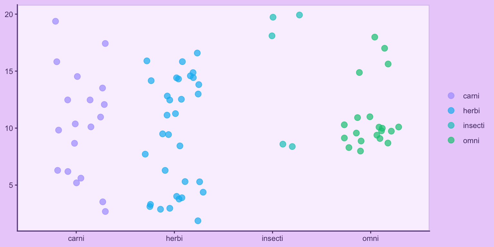
Personalizar y crear colores
Modificar colores existentes
Las funciones del paquete {shades} nos permitan obtener información detallada sobre cada uno de los colores, y usar esta misma información para modificarlos con mucho detalle.
Por ejemplo, definamos un color, y luego obtengamos el valor de su tonalidad. Recordemos que la tonalidad de los colores se expresan como grados entre 0° y 360°.
color <- "#f65b74"
shades::hue(color)
[1] 350.3226
Obtenemos que, para el color definido, el valor de su tonalidad es 350.3226125. Podemos usar esta información para modificar levemente el mismo color y así obtener una variable del mismo color levemente más anaranjada.
color2 <- shades::hue(color, 370)
Podemos obtener mismos resultados utilizando el delta de la tonalidad del color; es decir, sumándole restándole una cantidad de grados a el valor de la tonalidad del color mismo:
color3 <- shades::hue(color, delta(50))
Al usar la función delta(), lo que hacemos es pedirle que cambie la tonalidad del color en 50°, volviéndose en un tono amarillo.
Podemos obtener un resultado similar usando col_shift() del paquete {scales}:
color2 <- scales::col_shift(color, 20)
El brillo (brightness) va de cero a uno, mientras que la claridad (lightness) va de cero a 100.
color <- color |> brightness(0.7)
color <- color |> lightness(delta(20))
Con {scales}, la función col_lighter() realiza el mismo propósito:
color <- col_lighter(color, 20)
Por su parte, la saturación aumenta la intensidad del color.
color <- color |> saturation(delta(30))
Podemos utilizar la función delta() para crear una sencilla paleta de colores a partir de un mismo color, aumentando y disminuyendo su intensidad (chroma):
colores <- c(color |> chroma(delta(30)),
color,
color |> chroma(delta(-30)))
En {scales}, la función es col_saturate():
color <- col_saturate(color, -50)
Podemos combinar estas técnicas para crear una paleta de colores más compleja, construida toda a partir de un solo color al cual se le va aumentando o disminuyendo sus valores de claridad e intensidad. El beneficio de hacerlo de esta manera es que luego basta con cambiar el color principal para obtener una paleta de iguales características, pero basada en una tonalidad distinta.
color_principal = "#4D4484"
color_fondo = color_principal |> lightness(13) |> chroma(20)
color_detalle = color_principal |> lightness(20) |> chroma(40)
color_destacado = color_principal |> lightness(50) |> chroma(65)
color_texto = color_principal |> lightness(80)
colores <- c(color_principal,
color_fondo,
color_detalle,
color_destacado,
color_texto)
Ahora usamos el mismo código, pero cambiando el color de origen:
color_principal = "#3170ac"
color_fondo = color_principal |> lightness(13) |> chroma(20)
color_detalle = color_principal |> lightness(20) |> chroma(40)
color_destacado = color_principal |> lightness(50) |> chroma(65)
color_texto = color_principal |> lightness(80)
colores <- c(color_principal,
color_fondo,
color_detalle,
color_destacado,
color_texto)
Notar que el código es igual, y sólo se cambió el valor del color_principal. Esta estrategia es muy útil si se están produciendo visualizaciones o aplicaciones que ocupan una paleta de colores monocromática.
Mezclar colores
Las funciones submix() y addmix() del paquete {shades} facilitan el mezclado de colores sustraje ctivo y aditivo, respectivamente.
A partir de dos colores, entrega la mezcla de ellos, abriendo muchas posibilidades para la experimentación y creación de nuevos colores.
Los siguientes ejemplos muestran en el centro la mezcla que resulta de los otros dos colores:
colores <- c("#70f1d5",
submix("#70f1d5", "#fae55f"),
"#fae55f")
colores <- c("#3377f7",
addmix("#3377f7", "#ec4e3c"),
"#ec4e3c")
colores <- c("#f9ce45",
submix("#f9ce45", "#77d671", amount = 0.5),
"#77d671")
El paquete {scales} también provee una función para mezclar colores. Se puede usar esta función para tomar una paleta de colores y volverla más coherente al aplicarle una pequeña fracción de otro color, en este caso naranja:
colores <- col_mix(a = c("#77d671", "#70f1d5", "#fae55f", "#ff479c"),
b = "orange2",
amount = 0.2)
Crear colores
Puedes crear un color en R definiendo su tonalidad (hue), saturación (saturation) y brillo (value) con hsv(), entendiendo que el matiz es la posición del color en la escala de todos los colores, que va del 0 al 1, empezando y terminando con el rojo:
color <- hsv(h = 0, s = 1, v = 1)
Para guiarse, la siguiente gráfica muestra la tonalidad de colores entre 0 y 1,
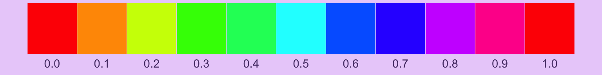
Siguiendo el gráfico anterior, vemos que el tono 0.8 corresponde al color morado, así que podemos crearlo con hsv():
color <- hsv(0.85, 1, 1)
Luego podemos modificar la saturación y brillo del color con los otros dos argumentos de hsv():
color <- hsv(0.82, 0.5, 0.4)
Previsualizar colores
En R puedes usar la función swatch() del paquete {shades} para previsualizar cualquier color o vector de colores. Una alternativa es la función show_col() de {scales}, que hace lo mismo.
library(shades)
library(scales)
colores <- c("#DEC5F2", "#9069C0", "#6E3A98")
shades::swatch(colores)

scales::show_col(colores)
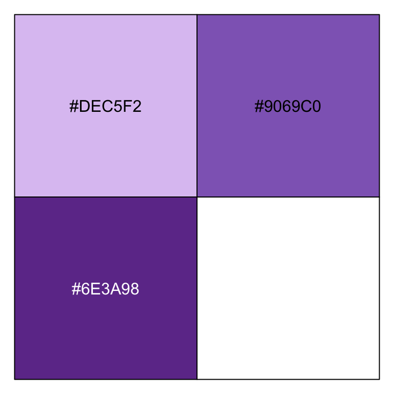
Así puedes experimentar visualizando de inmediato las mezclas de colores y paletas de colores que crees.
Publicaciones sobre visualización de datos


Fuentes y recursos
- https://github.com/EmilHvitfeldt/r-color-palettes
- https://r-graph-gallery.com/ggplot2-color.html
- https://www.datanovia.com/en/blog/top-r-color-palettes-to-know-for-great-data-visualization/
- https://jbengler.github.io/tidyplots/articles/Color-schemes.html
- https://emilhvitfeldt.com/post/2019-10-01-manipulating-colors-with-prismatic/index.html